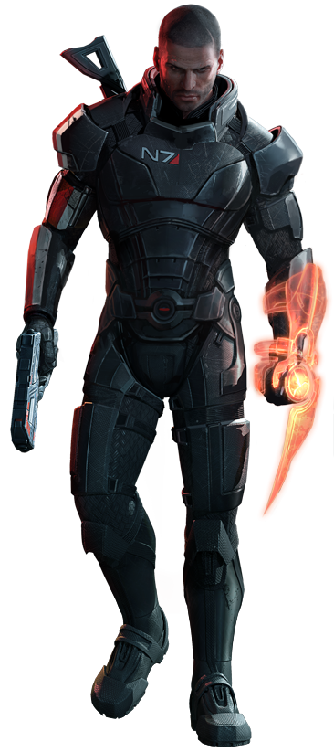
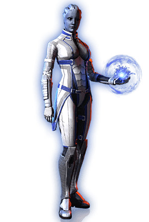
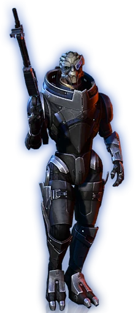
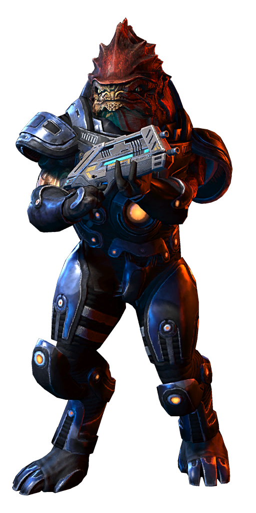
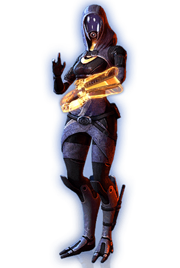

Learn More
Me

Liara
Liara is a captivating character from the epic sci-fi universe of Mass Effect. As an alien archaeologist and an extraordinary Asari, she possesses an innate brilliance and an insatiable curiosity for unraveling the mysteries of the cosmos. With her ethereal blue skin, delicate facial markings, and luminous eyes, Liara embodies the essence of otherworldly beauty. Her graceful movements and enigmatic aura hint at the depths of her wisdom and the ancient knowledge she holds within. Liara's unique abilities as a biotic, harnessing the power of dark energy, allow her to manipulate the very fabric of the universe. In battle, she becomes a formidable force, wielding her biotic powers with precision and grace. Yet, it is her compassionate nature and unwavering dedication to the preservation of life that truly sets her apart. Beyond her physical prowess, Liara possesses an unmatched intellect and a deep understanding of galactic history. Her passion for uncovering lost civilizations and deciphering ancient texts is rivaled only by her determination to bring about a future where all species can coexist in harmony. In the vast and treacherous reaches of the Mass Effect universe, Liara remains a beacon of hope and a steadfast ally. Her unwavering loyalty and unwavering commitment to justice make her an indispensable companion on the thrilling journey through space and time. Liara is a symbol of the fantastical and awe-inspiring nature of science fiction, embodying the blend of mystery, adventure, and limitless possibilities that captivate our imaginations.

Garrus
Garrus Vakarian, a legendary figure within the realms of science fiction, graces the Mass Effect universe with his compelling presence. As a Turian and a skilled marksman, he embodies both the grace and strength of his species. With his striking metallic carapace and piercing blue eyes, Garrus cuts an imposing figure that commands respect. His battle-worn armor and battle-scarred visage serve as a testament to his unwavering resolve and unwavering dedication to justice. Garrus is a consummate professional, known for his unparalleled proficiency as a sniper and his tactical brilliance on the battlefield. His accuracy is unparalleled, and his ability to adapt to any situation makes him a force to be reckoned with. Despite his stoic exterior, Garrus possesses a dry wit and a sharp sense of humor that brings levity to even the most dire of circumstances. His loyalty to his comrades is unwavering, and he stands as a stalwart defender of galactic peace. In the vast expanse of the Mass Effect universe, Garrus serves as a beacon of hope and a symbol of resilience. His unwavering commitment to justice and his willingness to fight for what is right make him an indispensable ally on the thrilling journey through the cosmos. Garrus epitomizes the fantastical and enthralling elements of science fiction, embodying the fusion of strength, camaraderie, and limitless possibilities that captivate our imaginations.
Wrex
Wrex, a towering presence in the rich tapestry of science fiction, strides across the universe of Mass Effect with an indomitable spirit. As a Krogan warrior, he embodies both brute strength and unwavering determination. With his imposing stature, powerful musculature, and fierce, reptilian features, Wrex commands attention wherever he goes. His battle-hardened armor and battle scars bear witness to the countless conflicts he has faced and triumphed over. Wrex is a force of nature in combat, wielding heavy weaponry with unmatched proficiency. His raw power and unwavering resolve make him a formidable adversary and a steadfast protector of those he considers allies. Beneath his gruff exterior lies a complex individual with a deep sense of honor and loyalty. Wrex's warrior spirit is tempered by his keen intelligence and a philosophical nature, making him a sage voice in matters of strategy and diplomacy. Driven by a desire to uplift his species and defy the odds stacked against them, Wrex stands as a beacon of resilience and hope. His unwavering commitment to the survival and prosperity of the Krogan people fuels his every action. In the vast expanse of the Mass Effect universe, Wrex represents the epitome of strength and resilience. His unwavering loyalty and unyielding determination make him a trusted ally and a powerful force to be reckoned with. Wrex embodies the fantastical and awe-inspiring elements of science fiction, capturing the essence of untamed power, unwavering loyalty, and the indomitable spirit that captivate our imaginations.
